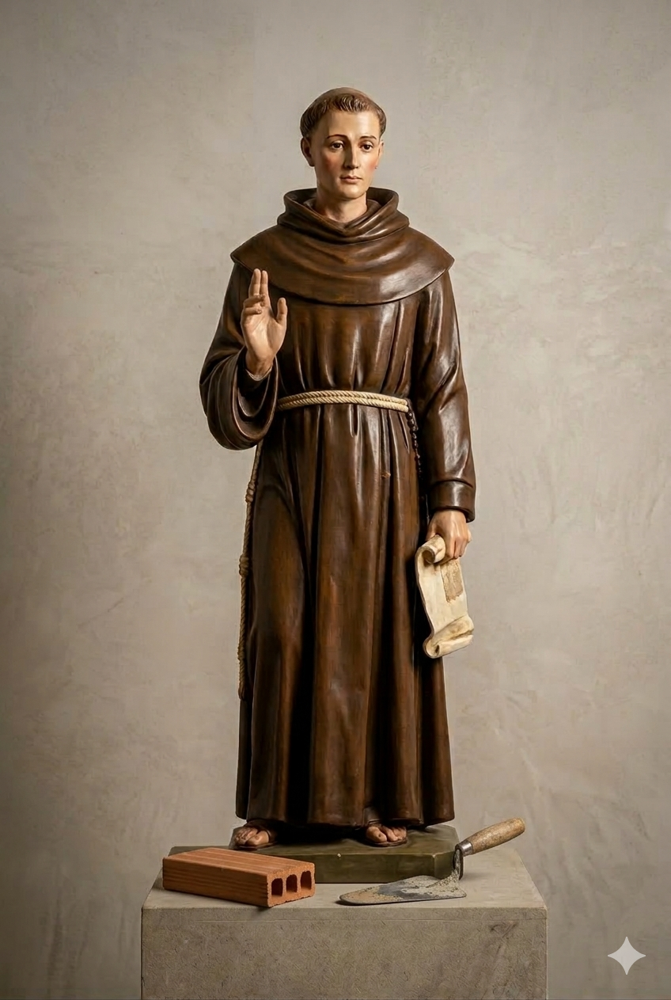

Santo da Paz e da Caridade
Padroeiro da Construção Civil
Frei Galvão foi um grande devoto de Maria Santíssima, a quem se consagrou aos 27 anos de idade, assinando com o próprio sangue o documento de consagração.
O primeiro santo brasileiro pertenceu à Província Franciscana da Imaculada Conceição do Brasil, mesmo grupo de frades do Seminário Franciscano Frei Galvão.
Pílulas Devocionais
Inspirados pelos atos de amor e caridade de Santo Antônio de Sant'Anna Galvão sobretudo, para com os doentes, damos continuação à produção e distribuição das Pílulas Devocionais às pessoas que nos procuram em momento de aflição.
Por meio deste sacramental (Pílulas), Frei Galvão demonstra sua compaixão pelos enfermos; objeto devocional de fé, é representado por um papelzinho, dobrado em forma de pílula e com uma frase em honra à Imaculada Conceição:
"Depois do parto, ó Virgem, permaneceste intacta. Mãe de Deus, intercede por nós".
As Pílulas de Frei Galvão não são remédios químicos, mas Pílulas Devocionais que não dispensam a ida ao médico!
Oração da Novena
Deus de amor, fonte de todas as luzes, que cumulastes de bênçãos o vosso Santo Antônio de Sant'Anna Galvão, nós vos adoramos, glorificamos e vos agradecemos, porque nele fizestes maravilhas.
Ele, Senhor, por vossa inspiração, criou para o vosso povo sofrido esta Pílula, sinal da compaixão para com os enfermos e sinal seguro da mediação da Virgem Maria Imaculada.
Alcançai-nos, pela intercessão de Vossa Mãe e de Santo Antônio de Sant'Anna Galvão, que nós, ao tomarmos com fé e devoção estas pílulas, consigamos a graça desejada (pedir a graça).
Ó Santo Antônio de Sant'Anna Galvão, junto à Maria, Mãe de Deus, rogai por nós, para que obtenhamos do Pai Celeste a vida plena no amor do Espírito Santo. Amém!
Para receber as Pílulas
Envie-nos uma carta contendo dentro um envelope selado com a carta comercial 1º porte, que enviaremos de volta com as Pílulas.
Seminário Franciscano Frei Galvão
Av. José Pereira da Cruz, 53
Jardim do Vale
Guaratinguetá/SP – CEP 12519-411
Proibida a venda das Pílulas Devocionais.
Ajude-nos
Envie sua contribuição espontânea e ajude na formação dos futuros franciscanos e no acolhimento aos devotos de Frei Galvão!
Contas Bancárias
- Bradesco: Agência 0415-4 | C/C 16.704-5
- CEF: Agência 3475-4 | Op. 003 | C/C 1274-9
Chave PIX (CNPJ)
62.340.203/0018-22
Favorecida: Província da Imaculada Conceição do Brasil
Cronologia de Vida e Obra
Os principais marcos da história do primeiro santo brasileiro, desde o seu nascimento até a Canonização.
O Milagre da Canonização
O relato surpreendente e cientificamente inexplicável que elevou Frei Galvão aos altares.
Entre 1993 e 1994, Sandra Grossi de Almeida, de São Paulo (Capital), sofreu três abortos espontâneos devido ao "útero bicorne": um útero com cavidades de dimensões muito pequenas e assimétricas. Esta malformação, que não pode ser corrigida cirurgicamente, impossibilitava levar qualquer gravidez ao seu final, pois o feto não tinha espaço suficiente para crescimento e formação.
Em maio de 1999, Sandra ficou novamente grávida. Em agosto, a sua ginecologista fez uma "cerclagem cervical" preventiva, numa tentativa de evitar um novo aborto, já que a gravidez era de altíssimo risco. Sandra estava consciente de que um novo aborto, um parto prematuro ou uma forte hemorragia poderiam levá-la à morte. Os médicos aconselharam-na a interromper a gravidez ou, no máximo, levá-la apenas até o quinto mês, quando o bebê seria retirado prematuramente.
Entretanto, mesmo diante de um quadro tão grave, Sandra não desistiu. Durante toda a gravidez, ela e sua família invocaram Frei Galvão, com muitas orações e novenas contínuas.
Autorizada pelos médicos, ela tomou as "Pílulas de Frei Galvão", com muita fé e a certeza de que o então "homem da Paz e da Caridade" iria interceder por ela e permitir o nascimento desse filho tão almejado.
A gestação evoluiu normalmente até a trigésima segunda semana. Por ser de altíssimo risco, a parturiente fez repouso absoluto durante os meses seguintes, sendo inclusive internada para acompanhamento diário. No dia 11/12/1999, com a ruptura da bolsa, os médicos optaram pelo parto por cesariana, que ocorreu sem nenhuma complicação.
Um fato inexplicável
Assim, com quase dois quilos e 42 centímetros, nasceu Enzo de Almeida Galafassi. Embora tenha apresentado um gravíssimo caso de deficiência respiratória, precisando ficar entubado por cerca de 24 horas, recebeu alta no dia 19/12/1999.
O fato desta gestação (de alto risco e sem esperança por parte dos médicos) ter chegado ao final com sucesso foi atribuído à intercessão de Santo Antônio de Sant'Anna Galvão. Tido como um fato cientificamente inexplicável no seu conjunto, segundo os atuais conhecimentos, foi considerado como miraculoso, por unanimidade, pelo "Congresso de Teólogos".
No dia 16/12/2006, o Papa Bento XVI autorizou a Congregação das Causas dos Santos a promulgar o Decreto a respeito do milagre. Atualmente, Sandra e Enzo residem em Brasília, DF.